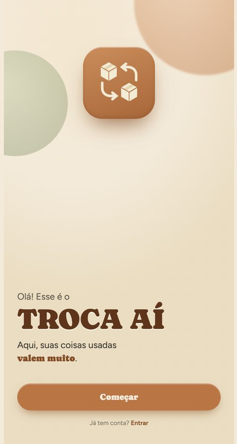
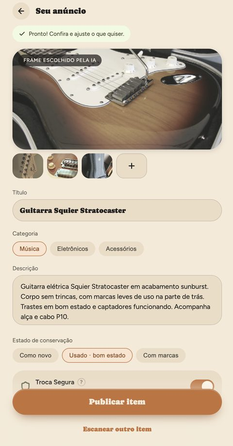
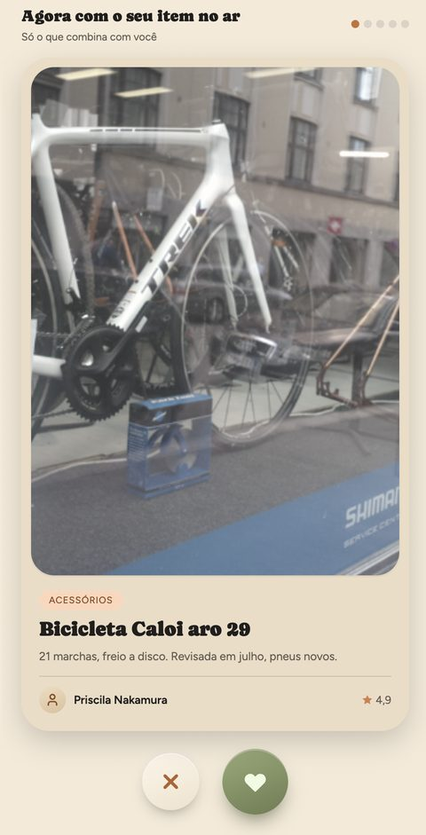
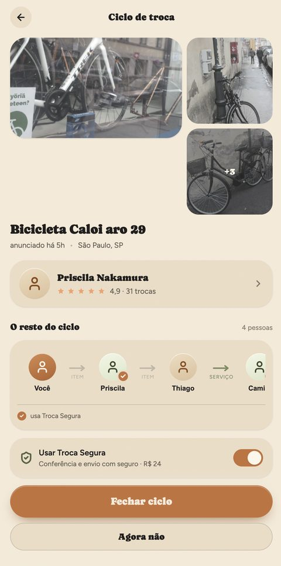

Troca Aí
Trocas multilaterais com conferência física em comércios de bairro. Sem dinheiro, sem etiqueta impressa, sem medo de golpe.
Portfólio de Evidências · Empreenda Senac, 19ª edição · Beatriz Rodrigues Maranhão, Senac Lapa Faustolo
Prefiro deixar parado no armário ou dar para alguém do que me arriscar.
Já tentei vender no Enjoei, mas quando vi os descontos, sobrou quase nada.
Quase todo mundo tem um armário com peças em bom estado que não usa mais. O que fazem com elas é o ponto de partida deste projeto: dos 85 respondentes, 84,7% doam ou simplesmente acumulam, e só 7,1% chegam a tentar vender pela internet. Não é falta de valor nas peças, é excesso de atrito no caminho.
Quando perguntamos o que incomoda ao negociar usados online, a resposta dominante foi segurança: 67,1% citam fraudes, calotes e perfis falsos, 45,9% temem receber algo quebrado ou diferente do anúncio, e 37,6% evitam o encontro presencial com estranhos. Somam-se a isso as taxas de 20% a 35% dos marketplaces e a demora para achar um interessado, citada por um em cada três.
A surpresa foi a direção da fuga. Esperávamos que a venda online disputasse espaço com a doação; na prática, a fricção empurra 68,2% direto para doar, muitas vezes para quem não precisava daquilo. O valor evapora no armário ou na caridade por falta de um caminho seguro.
Dores ao negociar usados online · múltipla escolha, N = 85
Serviços como moeda de troca saíram do escopo inicial: só 22,4% têm grande interesse, e a confiança prévia entre as partes é decisiva. A funcionalidade fica para quando a marca puder atuar como fiadora.
A ideia da Fase Inicial era simples: retomar o escambo. Ao planejar, três ajustes transformaram a ideia em produto.
Trocas em cadeia. Em vez de exigir que A queira exatamente a peça de B e vice-versa, a plataforma monta ciclos: A dá para B, B dá para C, C dá para A. Ninguém precisa coincidir com ninguém; basta que cada um queira a peça do seguinte.
Comércio de bairro. A conferência física acontece em cafeterias e papelarias parceiras, que recebem a peça, comparam com as fotos, lacram e despacham. Tudo por QR Code, sem etiqueta impressa.
Taxa fixa. No lugar da comissão percentual que o público associa a "sobrou quase nada", um valor previsível por troca intermediada.
Cada ajuste virou uma hipótese com critério de sucesso definido antes de ir a campo, para que o resultado não fosse ajustado à conveniência. A tabela resume o que esperávamos e o que encontramos.
| Hipótese | O que esperávamos | Critério | Resultado |
|---|---|---|---|
| H1 Fricção gera acúmulo | Taxas e burocracia fazem as pessoas preferirem doar | > 70% | 84,7% |
| H2 Aceitação da multitroca | Usuários aceitam trocas em cadeia | > 70% | 91,7% |
| H3 Valor subjetivo | Trocam por utilidade imediata e aceitam "troca com volta" | > 50% | 87,1% |
| H4 Permuta de serviços | Interesse em usar habilidades como moeda | > 30% | 22,4% |
| H5 Medo de fraude é a barreira | Conferência física é indispensável | > 70% | 88,2% |
Quatro das cinco hipóteses passaram com folga. Também passaram os critérios de cliente (58,8% da amostra entre 25 e 44 anos, contra meta de 50%) e de monetização (60% preferem um formato de cobrança, contra meta de 50%).
Camila Duarte, 32
A "Desapegadora Urbana Consciente". Analista de marketing sênior, mora em Santo Amaro.
- 15 a 25 peças em excelente estado, paradas há mais de seis meses
- Desistiu do Enjoei pelas comissões
- Teve receio de marcar encontro em estação de trem
- Quer validar o QR Code na cafeteria da esquina em dois minutos
Foram 85 questionários, 15 entrevistas em profundidade e 10 testes observados do protótipo, todos em São Paulo. A maior parte da amostra (58,8%) tem entre 25 e 44 anos, é digitalmente ativa e já usa apps para consumir.
Desses dados saiu uma persona, a "Desapegadora Urbana Consciente", que acompanha o projeto do cadastro ao ciclo de trocas.
O que está parado
Roupas, sapatos e acessórios lideram (72,9%), seguidos de eletrônicos, celulares e games (35,3%), jogos, livros e colecionáveis (23,5%) e serviços ou habilidades (20%). Os cruzamentos importam: entre quem tem eletrônicos parados, 76,7% pagariam pela conferência física; entre quem acumula ou doa por falta de opção, 94,7% aderem à troca em rede. O medo de golpe (84,0%) se concentra justamente no público de 25 a 44 anos.
Meu maior receio seria golpe financeiro mesmo. Ou, se eu tivesse que levar algo para alguém, medo de emboscada.
Para mim tanto faz quantas pessoas estão envolvidas na troca. O que importa é eu receber o item em bom estado.
O que está parado em casa · múltipla escolha, N = 85
Do lado do balcão
Fabio do Nascimento, dono de um minimercado que já é ponto de coleta do Mercado Livre e da Amazon, considerou o repasse de R$ 3,00 por pacote "ótimo": essas plataformas pagam R$ 1,00 ou menos. É uma única conversa, fora do perímetro inicial; as conversas com cafeterias e papelarias da Zona Sul são o primeiro passo do plano de execução.
Limites e fontes. Entrevistas gravadas e transcritas; questionário no Google Forms com 85 respostas válidas, percentuais sem arredondamento. As perguntas focaram em comportamento passado, não em intenção.
O MVP trabalha só com produtos físicos; serviços entram numa fase futura. Nenhuma peça é despachada antes de todos os elos terem entregado a sua no parceiro, e a regra de desistência tem prazo fechado: ninguém fica com o item preso.
O Troca Aí é um app de trocas multilaterais com conferência física. Camila quer o livro de Alex, Alex quer a bolsa de Bruno, Bruno quer o casaco de Camila: o motor de grafos encontra esse ciclo, e cada peça passa por um comércio parceiro antes de seguir viagem. Nenhuma troca depende de duas pessoas quererem exatamente o que a outra tem.
A jornada em seis passos
- Cadastra a peça com guia de fotos e apoio de IA, que sugere título, categoria e descrição.
- Descobre itens e marca o que quer.
- Aprova o ciclo sugerido pelo motor de grafos.
- Leva a peça ao comércio parceiro mais próximo.
- O lojista confere com as fotos, lacra e despacha.
- Entrega metropolitana em 48 a 72 horas.
E quando a troca dá errado?
O ciclo fechou, parte das pessoas já deixou a peça no parceiro, e algo falha. Dois caminhos, definidos antes do lançamento.
- A plataforma procura outra pessoa para entrar no lugar e fechar o mesmo ciclo.
- Quem já está dentro escolhe manter-se no ciclo, com a peça guardada no parceiro por até 1 semana, ou buscar a peça de volta, sem custo.
- Se a semana termina sem substituto, o ciclo é desfeito e todos retiram suas peças no parceiro.
- O seguro do envio é acionado pela plataforma, não pelo usuário.
- As fotos do cadastro, da conferência no lojista e do recebimento são a evidência do estado da peça em cada etapa.
- A pessoa prejudicada recebe o valor do item. O teto de valor da Troca Segura garante cobertura de 100%.
Numa venda, basta um lado querer. Numa troca direta, Ana precisa querer o jogo de Beto e Beto precisa querer o livro de Ana. Se a chance de alguém gostar de um item qualquer é p, a chance de a troca acontecer é p × p = p².
Elevar ao quadrado é brutal: com 10% de interesse, só 1 em cada 100 pares dá match. Mova o controle abaixo para ver como a troca direta sempre perde para a venda.
E se ninguém precisar querer de volta?
Num ciclo de três pessoas, Ana dá para Beto, Beto dá para Carla, Carla dá para Ana. Cada ciclo fecha com chance p³, menor que p². Até aqui, parece pior. Mas o número de ciclos possíveis entre N itens é N(N−1)(N−2) ÷ 3, contra N(N−1) ÷ 2 pares. Cada ciclo é mais raro, mas há tantos ciclos a mais que, no total, aparecem mais trocas. Quanto maior o catálogo, mais isso vale.
Um concorrente serve de medida
O Xcambo, site de troca direta, mostra na página inicial 150 usuários, 66 itens anunciados e 9 trocas. Só quem anunciou pode trocar, então o universo é N = 66, com 2.145 pares possíveis. Nove trocas em 2.145 pares dá p² ≈ 0,42%, ou p ≈ 6,5%: cada pessoa gosta de um em cada quinze itens. O interesse é normal; o problema é o quadrado. Com esse p, os mesmos 66 itens renderiam o seguinte se o site permitisse ciclos:
| Pessoas no ciclo | Ciclos possíveis | Chance de cada | Ciclos que fecham |
|---|---|---|---|
| 2 direta | 2.145 | 0,42% | |
| 3 | 91.520 | 0,027% | |
| 4 | 2.883.880 | 0,0018% | |
| 5 | 143.057.280 | 0,00011% |
Somando ciclos de 2, 3 e 4 pessoas: 9 + 25 + 76 = 110 ciclos que fecham, contra 9 só na troca direta. É por isso que o motor do Troca Aí busca ciclos de até quatro pessoas, e não pares: são 12 vezes mais oportunidades com o mesmo catálogo. Ciclos maiores existem em abundância, mas cada pessoa a mais é uma chance a mais de alguém desistir. O modelo assume interesses independentes e mesma chance p para todo item; como os ciclos compartilham itens, nem todos fecham ao mesmo tempo, e o que muda é o teto, que sai de 9 e vai para perto do total de itens.
O protótipo foi submetido a teste observado com 10 pessoas do público-alvo, em sessões presenciais supervisionadas com tarefa fechada: trocar uma guitarra por uma bicicleta usando o ciclo de trocas, cadastrando o item, buscando o produto desejado, aprovando a cadeia multilateral sugerida e escolhendo o ponto parceiro mais próximo. Depois da sessão, cada pessoa navegou por três dias em casa e mandou feedback por WhatsApp.
Todos passaram pelo critério de 7 em 10. O anúncio gerado por IA e o diagrama circular do ciclo foram os pontos mais elogiados; o diagrama, em especial, desmistificou o escambo para quem achava "esquisito trocar em cadeia". A taxa da Troca Segura ficou clara para todos.
Duas coisas confundiram. O frete avulso gerava percepção negativa, então o valor estimado passou para o onboarding, com status de cada elo e prazo de 48 a 72 horas. E a pergunta "e se B desistir?" levou à regra de desistência descrita na seção 04.
O celular abaixo é o protótipo real, feito no Claude Design. Toque em "Começar" e siga a jornada: onboarding, cadastro com IA, descoberta, ciclo e ponto parceiro. Ele leva alguns segundos para carregar.

Boas-vindas
Cadastro com IA
Descoberta
Ciclo de trocaLimites e fontes. O protótipo não abre a câmera, então o cadastro por foto foi explicado durante o teste. A variedade real do catálogo só será testada no Beta.
Formato e faixa de preço validados; o valor exato, não. R$ 12,90 (ponto médio) será testado contra R$ 9,90 e R$ 14,90 com os 53 inscritos do Beta antes do lançamento. Com custo direto de R$ 5,97, os três dão lucro.
Apresentado o conceito, 91,7% aprovaram a multitroca em rede e 88,2% consideraram a conferência física útil ou indispensável. Na hora de pagar, a amostra se dividiu: 37,6% pagariam uma taxa pela conferência, 50,6% só usariam se fosse gratuita e 11,8% não usariam. Daí o freemium: troca local gratuita, Troca Segura opcional.
Sobre o que é uma troca justa, 50,6% responderam utilidade imediata, 36,5% aceitariam uma diferença em dinheiro e só 12,9% exigem paridade de preço. Daí a "troca com volta", com o valor retido até a entrega.
Entre os formatos de cobrança, 60% preferem taxa fixa na faixa de R$ 9,90 a R$ 14,90; 20% não pagariam nada e 20% preferem percentual. Como referência de comportamento, vários entrevistados já pagam por envio com seguro em apps de entrega. Ao final do questionário, 62,4% pediram acesso ao Beta deixando nome completo e WhatsApp com DDD: 53 pessoas, com mais de 350 peças declaradas. É intenção com custo, não um clique.
Pagariam pela conferência?
O que é uma troca justa?
Um terço dos 168,7 milhões de internautas brasileiros já compra usados pela internet: 55,7 milhões de pessoas, o mercado total. Na Região Metropolitana de São Paulo, o recorte de 25 a 44 anos que usa apps para consumir soma 4,2 milhões, o mercado endereçável. A meta para 24 meses é 25 mil cadastros na Zona Sul, com 60 hubs e cerca de 3.500 usuários ativos: 0,6% do endereçável.
Contra quem
Os marketplaces de usados resolvem o problema depois que ele acontece: mediação de disputa, reembolso, bloqueio de perfil. Nenhum confere a peça antes do envio, e nenhum faz troca multilateral. O Troca Aí é o único que trata o medo de fraude e o medo do encontro antes de a peça sair da mão do dono. A alternativa mais comum, aliás, ainda é não fazer nada: 16,5% deixam no armário e 68,2% doam para se livrar do estresse.
| Critério | Enjoei | OLX | Mercado Livre | Trokaí | Xcambo / Shareitt | Troca Aí |
|---|---|---|---|---|---|---|
| Preço / taxa | 20% a 35% | Grátis (até 12%) | 12% a 19% + R$ 6 | % + frete | Taxas ou créditos | R$ 12,90 fixo |
| Troca multilateral | Não | Não | Não | Não | Parcial (créditos) | Sim |
| Conferência física antes do envio | Não | Não | Não | Não | Não | Sim, no bairro |
| Segurança pessoal | Alta | Baixa (rua) | Alta | Média | Média | Alta |
| Operação sem papel | Sim | Não | Não | Não | Não se aplica | Sim, QR Code |
Limites e fontes. O SAM combina recortes de fontes diferentes (Censo 2022, uso de apps) e é uma aproximação própria; o SOM equivale ao volume projetado para o 24º mês no cenário realista. Fontes: CNDL/SPC Brasil e Sebrae (2021); PNAD Contínua, IBGE (2026); Censo Demográfico 2022, IBGE, Tabela 20 – RMSP.
Trocar localmente, em pontos públicos seguros, é grátis. A receita vem de quem quer mais segurança ou mais conveniência. A Troca Segura custa R$ 12,90 por participante mais frete e inclui conferência, lacre, seguro do item e o repasse ao lojista. O Troca Prime, a R$ 29,90 por mês, dá até três trocas isentas, prioridade no algoritmo e selo verificado. E o frete comissionado, obrigatório na Troca Segura e opcional nas demais, rende uma margem pequena por envio, mas é a segunda receita em volume.
| Fonte de receita | Preço | Custo direto | Lucro | Margem |
|---|---|---|---|---|
| Troca Segura por participante, + frete | R$ 12,90 | R$ 5,97 | R$ 6,16 | 47,7% |
| Troca Prime assinatura mensal | R$ 29,90 | R$ 18,76 | R$ 9,35 | 31% |
| Frete comissionado média por envio | R$ 30,00 | R$ 26,06 | R$ 2,35 | 7,8% |
| Doa Aí quem recebe paga só o frete | R$ 0 + frete | R$ 26,06 | R$ 2,35 | 7,8% |
Por que a doação entra no modelo
68,2% da base já doa hoje, mas para amigos, família ou caridade, sem saber se a peça era o que a pessoa queria. O Doa Aí conecta quem quer desapegar a quem procura exatamente aquilo, sem taxa para nenhum dos dois: só o frete, de onde sai a margem da plataforma. Quem doa continua na rede e o catálogo cresce. Na projeção, responde por cerca de 10% das participações: porta de entrada e volume de frete, não o motor do negócio.
Doa Aí, em quatro passos
O lojista ganha três vezes mais
Cada pacote conferido e lacrado rende R$ 3,00 ao comércio parceiro, pagos semanalmente via PIX, além do fluxo de gente nova na loja. É três vezes o que Mercado Livre e Amazon pagam a pontos de coleta, e foi o que fez um comerciante que já opera para essas plataformas chamar o valor de "ótimo".
Limites e fontes. Custos diretos da Troca Segura: R$ 3,00 ao lojista, R$ 0,80 de seguro, R$ 0,60 de lacre, R$ 0,50 de notificações, R$ 0,50 de atendimento, R$ 0,42 de gateway e R$ 0,15 de IA; imposto de 6% (Simples Nacional). O lucro nominal do Prime é R$ 27,26; o real, com as três trocas isentas usadas, cai para R$ 9,35, valor adotado na projeção.
Beatriz Rodrigues Maranhão
- Bacharel em Marketing, USP
- Pós em Direção de Criação e Styling de Moda, Senac
- Liderou marketing e lançamentos digitais na Microsoft e na Tokio Marine
A fundadora responde por estratégia, marketing, comercial e parcerias, operações, atendimento e financeiro. A tecnologia (motor de grafos, validador por QR Code e o app) é desenvolvida internamente; jurídico e contábil são terceirizados a R$ 300 por mês cada.
Acumular quatro áreas no primeiro ano é uma escolha deliberada para não antecipar custo fixo. As contratações são disparadas por volume: atendimento em meio período no 13º mês, quando a operação chega a 300 participações mensais, e coordenação de hubs em meio período no 19º, com 40 hubs e 600 participações. Até lá, embaixadores de bairro pagos por ativação apoiam os pontos parceiros.
O investimento inicial é de R$ 121.850, dos quais R$ 46.850 são estruturação e R$ 75.000 capital de giro para atravessar até o equilíbrio no cenário realista. O prêmio de R$ 50.000 do Empreenda Senac cobre toda a estruturação; o giro vem de aporte escalonado dos sócios, e só R$ 31.189 são consumidos nos doze primeiros meses.
| Investimento inicial | Inclui | Valor |
|---|---|---|
| Tecnologia | UX/UI, pentest, ferramentas; app desenvolvido internamente | R$ 13.000 |
| Legalização | LTDA, LGPD, INPI, lojas de aplicativos | R$ 10.300 |
| Marketing inicial | Kits para 15 hubs, lançamento, ativação de bairro | R$ 23.550 |
| Capital de giro | Até o equilíbrio, cenário realista | R$ 75.000 |
| Total | R$ 121.850 | |
O custo mensal no primeiro ano é de R$ 4.100, sem pró-labore (R$ 2.600 durante o piloto). Cada participação deixa em média R$ 8,53, líquidos de custos diretos e imposto, então o ponto de equilíbrio exige 481 participações por mês: cerca de 160 ciclos de três pessoas, cinco a seis por dia. Partindo de 40 participações no primeiro mês (a coorte do Beta) e crescendo 20% ao mês no primeiro ano e 12% no segundo, o equilíbrio operacional chega no 24º mês e o payback no 35º. No cenário otimista, 12º e 26º. O prejuízo mensal cai ao longo do primeiro ano, sobe no 13º com atendimento e pró-labore, e vira lucro no 24º; o caixa mínimo é de R$ 6.243, no 23º mês, sem novo aporte.
Cenário realista, mês a mês
| Cenário | Crescimento (ano 1 / 2) | Participações no 24º mês | Faturamento no 24º mês | Equilíbrio | Payback |
|---|---|---|---|---|---|
| Pessimista | 12% / 8% | 350 | R$ 18.928 | 40º mês | > 48 meses |
| Realista | 20% / 12% | 1.158 | R$ 62.550 | 24º mês | 35º mês |
| Otimista | 26% / 15% | 2.720 | R$ 146.914 | 12º mês | 26º mês |
Menos de 70 participações no 6º mês (a curva pessimista) pausa a expansão de hubs e revisa preço e modelo, com R$ 17 mil gastos em vez de R$ 75 mil.
Limites e fontes. Equilíbrio no 24º mês está acima da referência de 6 a 18 meses para pequenos negócios, mas é típico de marketplaces, que precisam de massa crítica dos dois lados; a R$ 14,90, viria no 23º mês com giro de R$ 60 mil. Planilha do Senac no Empreenda Flix.
Régua de onboarding para os 53 inscritos com o teste de preço e, na mesma semana, visitas aos 5 primeiros comércios de bairro mapeados.
Os três primeiros meses são de estruturação e piloto fechado: LTDA, marca no INPI, contratos de custódia, cinco hubs credenciados na Zona Sul com kits de balcão, o teste de preço com os 53 inscritos e o app nativo com motor de grafos em versão fechada. Do quarto ao sexto mês, o app abre ao público da região com 15 hubs, plano Prime e troca com volta. Do sétimo ao décimo segundo, consolidação: rumo aos 60 hubs com embaixadores de bairro, foco em retenção e itens cadastrados.
| Fase | Entregas | Meta |
|---|---|---|
| Meses 1 a 3 Estruturação e piloto | LTDA, INPI, contratos de custódia · 5 hubs com kits · teste de preço R$ 9,90 / 12,90 / 14,90 · app e motor de grafos em versão fechada | 150 participações acumuladas |
| Meses 4 a 6 Lançamento | App aberto ao público da região · 15 hubs · Prime e troca com volta · gatilho de revisão no mês 6 | 100 participações e 10 Prime por mês |
| Meses 7 a 12 Consolidação | Rumo aos 60 hubs com embaixadores de bairro · retenção e itens cadastrados · suporte pelos sócios | 300 participações e 30 Prime por mês |
Riscos que já estão no plano
A adesão dos lojistas do perímetro ainda não foi validada na Zona Sul: é a primeira visita da fase 1. A densidade do catálogo precisa ser suficiente para o algoritmo fechar ciclos, por isso o Beta começa com uma coorte que já declarou 350 peças. A responsabilidade sobre o item é tratada com contrato de custódia, seguro em trânsito e DPO nomeado na adequação à LGPD. E um testador citou a plataforma "Trokaí": a busca de anterioridade e o registro no INPI (classes 35 e 42) entram nos meses 1 a 3, com nome alternativo mapeado caso haja conflito.
ODS 12, consumo e produção responsáveis. Cada troca substitui uma compra nova. As 350 peças já declaradas pela coorte do Beta são o primeiro estoque desviado do lixo.
ODS 8, trabalho decente e crescimento econômico. R$ 3,00 por pacote e fluxo de novos clientes para comerciantes de bairro; 60 hubs distribuem renda por dezenas de negócios locais, com prioridade a comércios independentes no credenciamento.
ODS 13, ação contra a mudança do clima. Remessas consolidadas nos pontos parceiros reduzem o transporte fracionado, e trocas locais eliminam o envio. Os kits de hub usam lacres e sacolas recicláveis, e um relatório trimestral público de peças trocadas por categoria mantém a conta visível.
Quer ser dos primeiros a trocar?
Entre na lista de espera do Troca Aí. Avisamos quando os primeiros pontos parceiros abrirem no seu bairro.